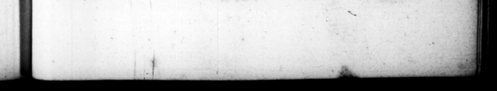

T FL DOMITIANSUR tummodo t, voce pre» conĩs. arragantia, cum orum ſuorum nomine alem dictaret 23 „ agk & D ner hr inde, Unde Into quidem ſermone cujuſquam,_ 8 appellarecur aliter, . fibi in Capitollo non aureas et argenteas dT; _— penalties ac | arcuſque cum quadrigis & inſignibus 1 trium phorum per regiones urbis, ac tor. exſtruxit, ut 2 on Sræce inſeriptum arcui ſit, ap Conſulatus xvii cepic, . ante eum nemo, quibus ſeptem me. tom — 2 omnes — pene titulo tenus nee quemquam ultra Ka. lendas Maij : plures ad Idas uſque Januarias. Poſt autem duos triumphos, Germanici 2 — i, * —— brem menſem : _ ex appellarionibus manicum, — 2 nc tranſnomina vit: quod altero —— Imperium, altero * 14. Per hc terribilis cunctis K. inviſue, tandem oppteſſus eſt amicorum libertorumque intimorum conſpira— ſimul «1 uxoris, An— ultimum vice uſpectum Ip dean etiam, Nec non & geHandel cuncta predixerant. * — ene —— ie ut ignarum tortis — — non ferrum = timeret. Quare paviſernper atque anxius, mi—. etiam ſuſpicionbus præ. ter modum commovebatur : ut edicti de — vineis iam facere non Ali mag re compulſus cre' pr i, with chariots and 359 carried away the prize 9 from all the. oraters 2 age chews not ſo much as vouch any atiſwer, but only by the voice of the cryer to be ſilent. Withthe lite arreg ance, when be diff ated the form of a letter 16 be uſed by his . be begin it 22 Qur d God commands ſo and ſo from which ie beams» eſt ts 10 file he ſame manner, 8 TIE. and comver _— 12 red 16 Prue oe e 25 fete any 2 I 7 them IG 2 it — He bert the off times, which 2 305 27 ne turns ſugce moſt be had 25 2 than the fitle | — for be never inued in office beyond the 2 of Mor, Ja for the art only to the i 1 his two tri . e the 12 of Germani cus. 4 4 the e September and — from 17740 Germanicus and Dontitian, b:cauſe be begun bis reign in , and was b in the other. 14. Becoming by the bt oft and edious to by theſe he was laſt taken off by 4 52. of friends and favourite ther with hu wife, * 72 2. — time befere # ſuſpicion of the gear and day he „ of the very manner of bis death, had learnt from the Ch be was 8 very. _ — at ſupp * him ere ing 10 WW” him fon.rd 24. of his . in not rather fearing fore being in 4 ee * T and = ty, he exceed? — —＋ ſuſpicions * that he ts is ehnught to have dropped the proclamabe deſegn'd for cutting wp the vines „ 6 on Jo — ar that of the publication 2 the 2 * datur, quam quod | ſpark libeNi _ his rmed with
